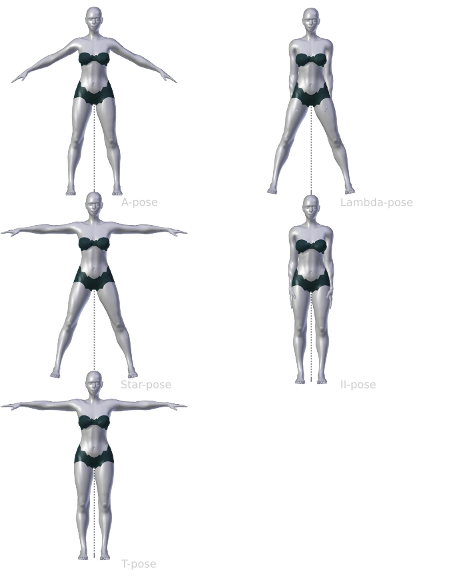
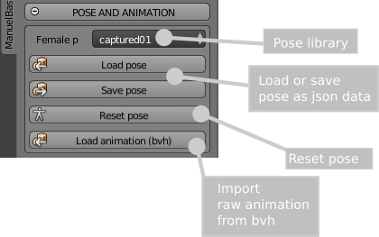
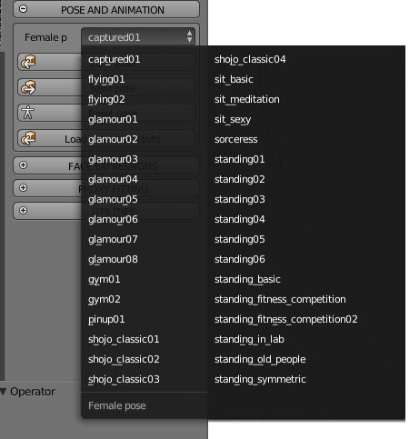

Pose system
Rest poses
A rest pose is what you see when there are no poses applied, in other words, when all the limbs rotations are zero.
The rest pose is an important feature because it determines the behaviour of the skeleton during the animation and the posing. For this reason the choice of the rest pose is part of the character "creation" phase.
On the contrary, The action poses and the animation are part of the "after creation" phase. You can read more about the "creation" and "after creation" steps in the modelling process section.
NOTE: The rest pose selector is not available for skeletons with inverse kinematics.
The GUI is very intuitive. You can select one of the preset rest pose from the builtin library, or load/save a custom rest pose.

To load a preset, just select it from the drop-down menu:

The built-in library covers the most common configurations used in CG.

To create a custom rest pose, select the skeleton, enter in Blender "pose mode" and proceed with the usual Blender techniques (RKEY to rotate, etc..). Then use the "Save custom rest pose" button to save the pose as json database. Since all skeletons of ManuelbastioniLAB are based on the same armature structure, the rest pose can be used with all lab characters. To load a custom rest pose, press the "Load custom rest pose" button and select the pose file.
Pose library
The pose library is an after creation tool, so it's available only for finalized characters.

The GUI for the pose library is very intuitive: The first element is a drop down menu that shows all the artistic poses currently implemented, labelled with intuitive names.

The buttons "Load pose" and "Save pose" are used to load and save poses using a simple json file.
Load and retarget animations
From version 1.5 the lab can load a raw animation from bvh files. It's an advanced expert system that analyzes the "anatomy" of the bvh, automatically recognizes the various elements (fingers, head, spine, feet, ecc.). During the tests it successfully recognized the most common skeleton structures used in mocap descriptions.
All happens with a one-click button, just selecting the file to load.

Utilities
In some cases, when the rest pose of the bvh is not perfectly equal to the rest pose of the lab character, it's required to correct the angles of some parts (usually clavicles and upper arms). This can be easily done selecting the bone to correct and using the offset tool under "Utilities" section.

The system is not designed to correct the bvh, but just to load and retarget the animation as it is, so things like wrong angles, tremors, frame rates must be corrected using external specific tools.